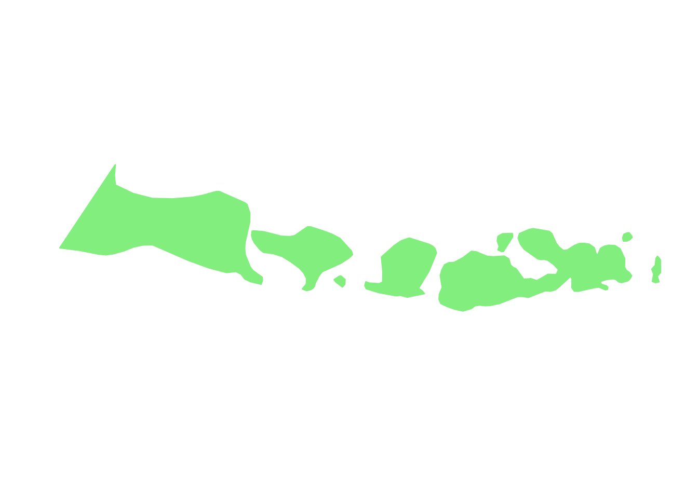
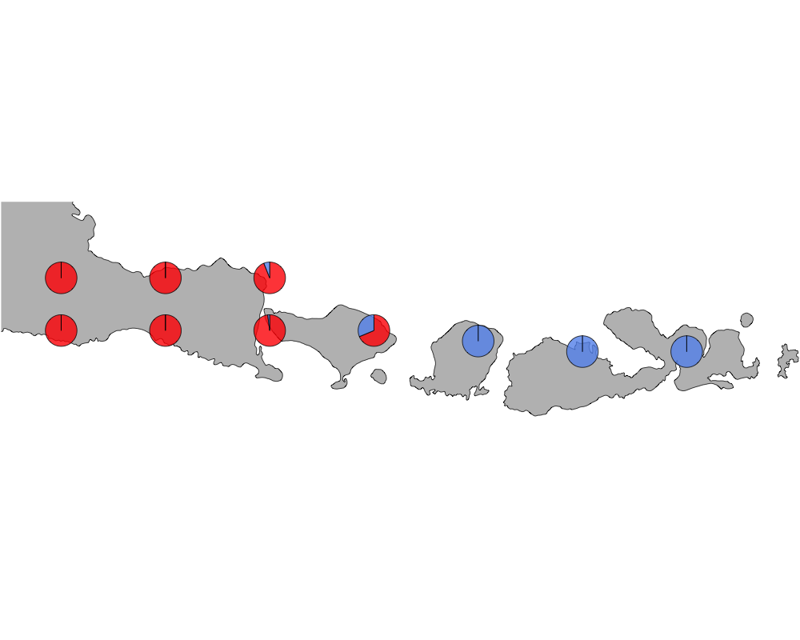
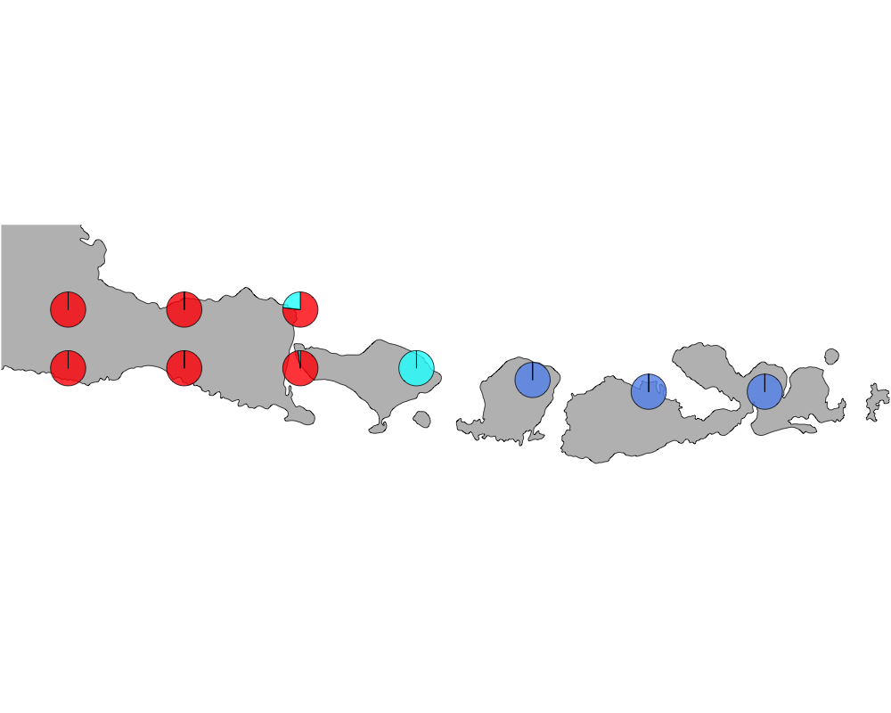
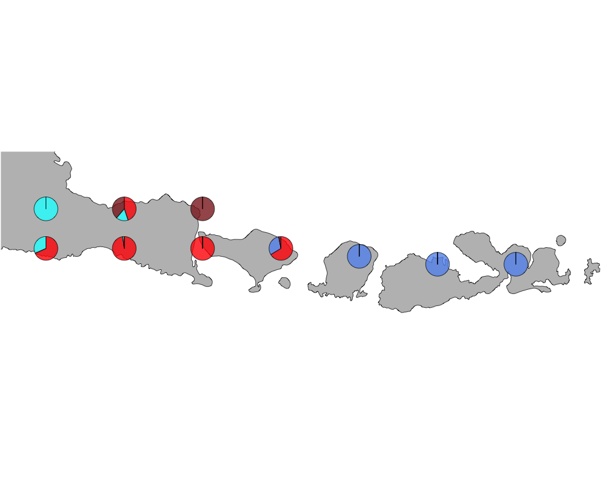
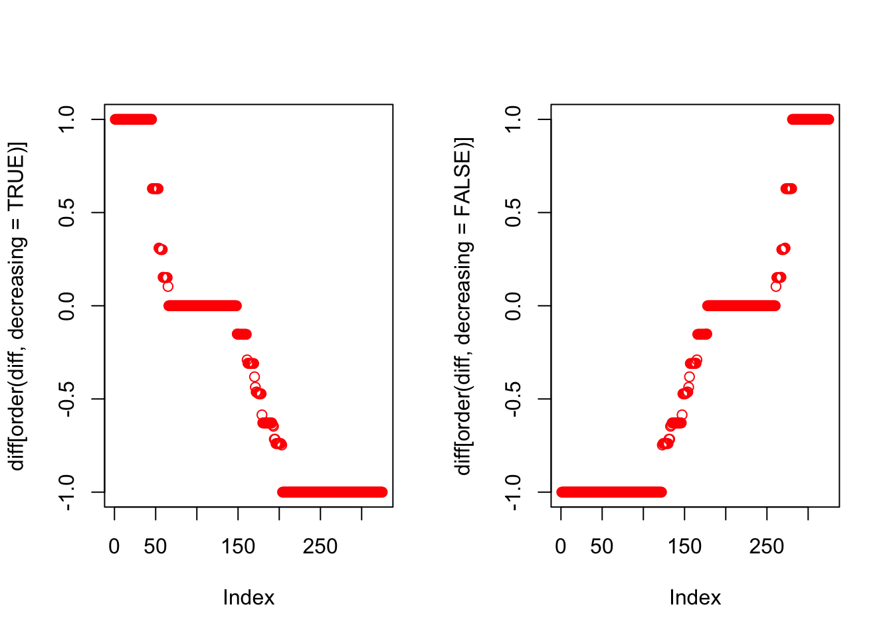

Here we observe the presence absence data of bird species in the Indonesian archipelago - comprising of Java, Bali, Lombok and Sumbawa. Lincoln (1975) observed bird counts on either side of the Wallace line paper and found the Western belt (Java Bali) to have a very distinct bird abundance pattern comared to the Eastern belt (Lombok and Sumbawa). We try to interpret that in the context of our Grade of Membership (GoM) model and its applications to presence absence data.
Load the data
datalist <- get(load("../data/wallace_region_pres_ab_breeding_no_seabirds.rda"))
latlong <- datalist$loc
data <- datalist$dat
if(nrow(latlong) != nrow(data)) stop("dimensions matching error")Map of Java, Bali, Lombok and Sumbawa
world_map <- map_data("world")
world_map <- world_map[world_map$region != "Antarctica",] # intercourse antarctica
world_map <- world_map[world_map$long > 112 & world_map$long < 119.5, ]
world_map <- world_map[world_map$lat > -9.3 & world_map$lat < -7.3, ]
p <- ggplot() + coord_fixed() +
xlab("") + ylab("")
#Add map to base plot
base_world_messy <- p + geom_polygon(data=world_map, aes(x=long, y=lat, group=group), colour="light green", fill="light green")
cleanup <-
theme(panel.grid.major = element_blank(), panel.grid.minor = element_blank(),
panel.background = element_rect(fill = 'white', colour = 'white'),
axis.line = element_line(colour = "white"), legend.position="none",
axis.ticks=element_blank(), axis.text.x=element_blank(),
axis.text.y=element_blank())
base_world <- base_world_messy + cleanup
base_world
Extracting the birds in this region
idx1 <- which(latlong[,2] > -9.3 & latlong[,2] < -7.3)
idx2 <- which(latlong[,1] > 112 & latlong[,1] < 119.5)
idx <- intersect(idx1, idx2)
length(idx)## [1] 10latlong2 <- latlong[idx,]birds_pa_data_2 <- data[idx, ]
birds_pa_data_3 <- birds_pa_data_2[, which(colSums(birds_pa_data_2)!=0)]Applying methclust presence absence Grade of Membership model to the presence absence data
topics_clust <- list()
topics_clust[[1]] <- NULL
for(k in 2:4){
topics_clust[[k]] <- meth_topics(birds_pa_data_3, 1 - birds_pa_data_3,
K=k, tol = 0.01, use_squarem = FALSE)
}
save(topics_clust, file = "../output/methClust_java_bali_lombok.rda")topics_clust <- get(load("../output/methClust_java_bali_lombok.rda"))color = c("red", "cornflowerblue", "cyan", "brown4", "burlywood", "darkgoldenrod1",
"azure4", "green","deepskyblue","yellow", "azure1")
intensity <- 0.8
latlong3 <- latlong2
latlong3[which(latlong3[,2] == -7.5), 2] = -7.8
latlong3[which(latlong3[,2] == -8.5), 2] = -8.3
latlong3[8,2] = -8.4
latlong3[9,2] = -8.5
latlong3[10,2] = -8.5
for(k in 2:4){
png(filename=paste0("../docs/Java_Bali_Lombok/geostructure_birds_", k, ".png"),width = 1000, height = 800)
map("worldHires",
ylim=c(-9.3,-7.1), xlim=c(112,119.5), # Re-defines the latitude and longitude range
col = "gray", fill=TRUE, mar=c(0.1,0.1,0.1,0.1))
lapply(1:dim(topics_clust[[k]]$omega)[1], function(r)
add.pie(z=as.integer(100*topics_clust[[k]]$omega[r,]),
x=latlong3[r,1], y=latlong3[r,2], labels=c("","",""),
radius = 0.15,
col=c(alpha(color[1],intensity),alpha(color[2],intensity),
alpha(color[3], intensity), alpha(color[4], intensity),
alpha(color[5], intensity), alpha(color[6], intensity),
alpha(color[7], intensity), alpha(color[8], intensity),
alpha(color[9], intensity), alpha(color[10], intensity),
alpha(color[11], intensity))));
dev.off()
}The geostructure plot for K=2.
  
The bird species separating Java and Bali from Lombok and Sumbawa for K=2.
topics_freq <- topics_clust[[2]]$freq
diff <- topics_freq[,2] - topics_freq[,1]
par(mfrow=c(1,2))
plot(diff[order(diff, decreasing = TRUE)], col = "red")
plot(diff[order(diff, decreasing = FALSE)], col = "red")
Birds to the east of the Wallace line (blue cluster)
rownames(topics_freq)[order(diff, decreasing = TRUE)[1:50]]## [1] "Accipiter fasciatus" "Accipiter sylvestris"
## [3] "Cacatua sulphurea" "Caridonax fulgidus"
## [5] "Charadrius peronii" "Circaetus gallicus"
## [7] "Collocalia esculenta" "Columba vitiensis"
## [9] "Coracina dohertyi" "Coracina personata"
## [11] "Dicaeum annae" "Dicaeum igniferum"
## [13] "Dicrurus densus" "Falco longipennis"
## [15] "Geoffroyus geoffroyi" "Geopelia maugeus"
## [17] "Heleia crassirostris" "Irediparra gallinacea"
## [19] "Lichmera lombokia" "Lonchura molucca"
## [21] "Lonchura pallida" "Lonchura quinticolor"
## [23] "Lophozosterops dohertyi" "Megapodius reinwardt"
## [25] "Milvus migrans" "Nectarinia solaris"
## [27] "Nisaetus floris" "Otus magicus"
## [29] "Otus silvicola" "Pericrocotus lansbergei"
## [31] "Philemon buceroides" "Pitta elegans"
## [33] "Rhipidura diluta" "Taeniopygia guttata"
## [35] "Terpsiphone paradisi" "Treron floris"
## [37] "Turnix maculosus" "Zoothera andromedae"
## [39] "Zoothera interpres" "Zosterops chloris"
## [41] "Zosterops wallacei" "Ixobrychus sinensis"
## [43] "Lichmera limbata" "Ptilinopus cinctus"
## [45] "Trichoglossus forsteni" "Aquila fasciata"
## [47] "Aviceda subcristata" "Gallinula tenebrosa"
## [49] "Pachycephala nudigula" "Rhinomyias oscillans"Birds to the west of the Wallace line (red cluster)
rownames(topics_freq)[order(diff, decreasing = FALSE)[1:50]]## [1] "Aegithina tiphia" "Anthracoceros albirostris"
## [3] "Aplonis panayensis" "Apus nipalensis"
## [5] "Arachnothera affinis" "Ardea brachyrhyncha"
## [7] "Ardea cinerea" "Ardea intermedia"
## [9] "Bubo sumatranus" "Butastur liventer"
## [11] "Cacomantis merulinus" "Centropus sinensis"
## [13] "Copsychus saularis" "Coracina fimbriata"
## [15] "Coracina javensis" "Cypsiurus balasiensis"
## [17] "Dendrocopos analis" "Dendrocygna javanica"
## [19] "Dicaeum chrysorrheum" "Dicaeum concolor"
## [21] "Dicaeum trigonostigma" "Dicrurus hottentottus"
## [23] "Dicrurus macrocercus" "Dicrurus paradiseus"
## [25] "Dinopium javanense" "Dryocopus javensis"
## [27] "Enicurus leschenaulti" "Falco severus"
## [29] "Glaucidium castanopterum" "Halcyon cyanoventris"
## [31] "Hemipus hirundinaceus" "Hirundapus giganteus"
## [33] "Ictinaetus malaiensis" "Ketupa ketupu"
## [35] "Leptoptilos javanicus" "Lewinia striata"
## [37] "Lonchura ferruginosa" "Megalurus palustris"
## [39] "Merops leschenaulti" "Microhierax fringillarius"
## [41] "Nisaetus cirrhatus" "Orthotomus sutorius"
## [43] "Otus lempiji" "Padda oryzivora"
## [45] "Pericrocotus cinnamomeus" "Phaenicophaeus curvirostris"
## [47] "Phodilus badius" "Pitta guajana"
## [49] "Ploceus manyar" "Ploceus philippinus"This R Markdown site was created with workflowr